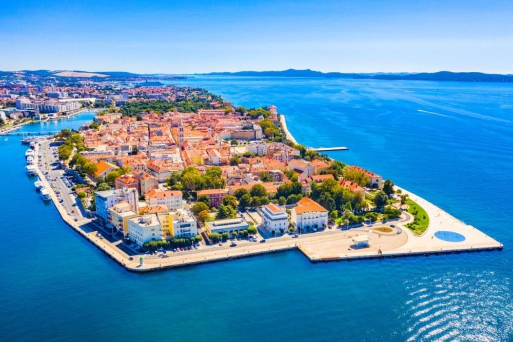

Descoperă orașul Zadar - O călătorie în Croația
Zadar este un oraș fascinant situat pe coasta Adriaticii, oferind o varietate de atracții interesante pentru vizitatori:
-

Sea Organ din Zadar - Experiență sonoră unică
Ascultați sunetele melodice generate de valurile mării care trec prin această instalație arhitecturală inovatoare.
-

Salutul Soarelui din Zadar - Spectacol de lumini
Uitați-vă la un joc de lumini și culori care se aprinde la apus, în funcție de mișcările soarelui.
-

Centrul vechi al orașului Zadar - Arhitectură istorică
Explorați străzile înguste ale centrului vechi și descoperiți clădiri medievale, piețe și atracții culturale.
-

Forumul Roman din Zadar - Istorie antică
Vizitați acest loc istoric unde puteți vedea ruinele forumului roman și alte construcții antice.
-

Plajele din Zadar - Relaxare pe malul mării
Bucurați-vă de plajele frumoase și de apa cristalină a Mării Adriatice.
Concluzii
Zadar oferă o combinație inedită de atracții culturale, naturale și arhitectură contemporană pentru vizitatori.